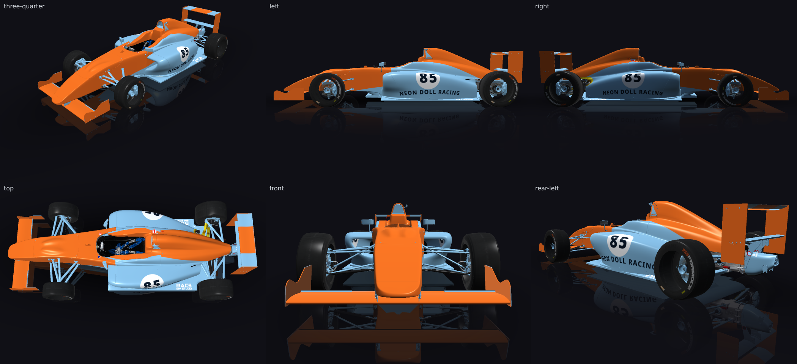
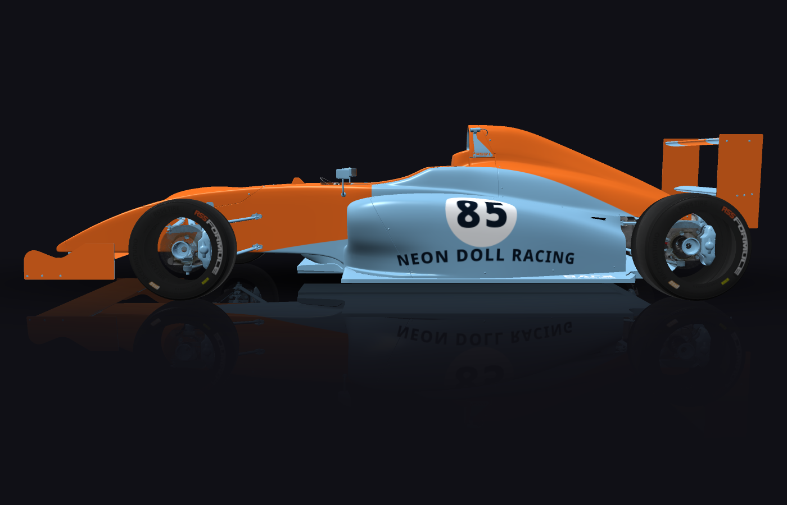
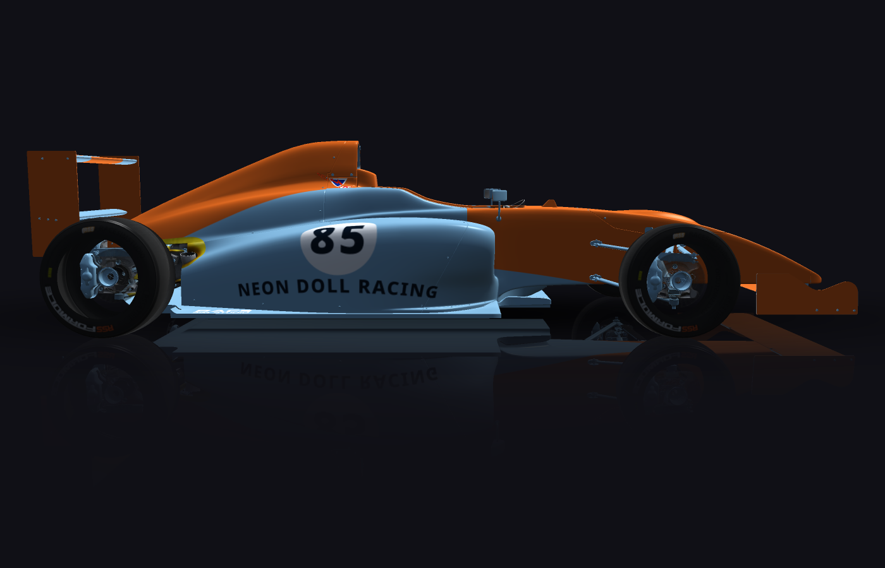
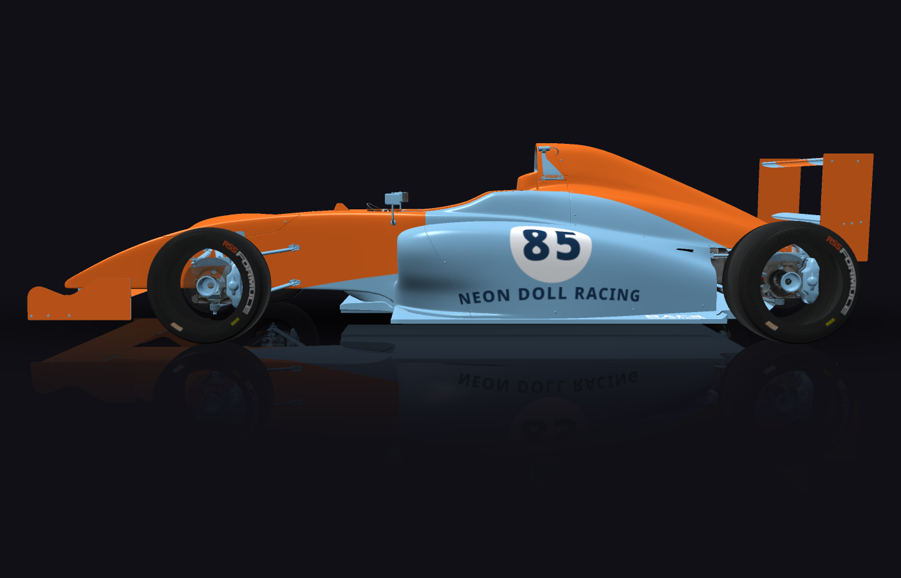
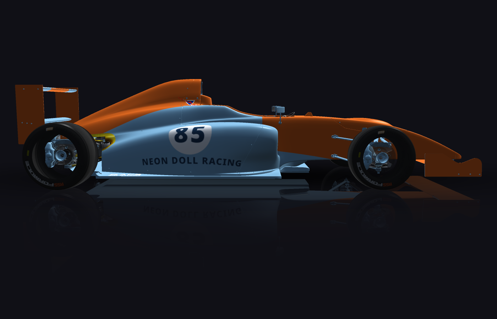

autolivery
Gulf-style, number 85, Neon Doll Racing, number readable from trackside. Use a white roundel with the number inside it, whole and fully visible, clear of every edge. An orange centre stripe runs the full length of the car, nose to tail, continuing over the rear wing.
passed in round 2 — in the editor's inbox, for a person to accept or discard
Round 2 — passed
render pass · fitment pass · critic pass · second look decided
Same Gulf-style design (powder-blue base, 450 mm orange centre stripe nose-to-tail and over the rear wing, orange nose/front-wing kit, white sidepod roundels with 85). Fix for the gate's one mustFix: the NEON DOLL RACING lettering on both sidepods is now near-black navy instead of mid deep blue, and its box is wider and taller so the capitals are noticeably larger — the name now reads hard against the powder blue at distance. Nothing else changed; check_fitment still 0 fatal, 0 high.

critic
cut off
- NEON DOLL RACING text (left side) (rear-left view, left sidepod, partially behind rear-left tire) [team-left]
notes
- The orange 'centre stripe' is actually a wide block covering the nose, cockpit surround and sidepod edges rather than a narrow Gulf-style stripe; consider narrowing it to better match the classic Gulf look.
- NEON DOLL RACING text on the left sidepod is partly hidden by the rear-left tire in the rear-left view; reposition or resize the text so it clears the wheel in that angle.
second look, closer


15 low finding(s), which fail nothing
- unseen: metal-base is 14% visible from trackside (124 points cast), on a panel measured at 100% — so it is in the part of the panel something else stands in front of; 9 of its points are directly under RR_RIM_Mesh_SUB0, 8 of its points are directly under HUB_RR_MESH_SUB1, 8 of its points are directly under RSS4_RR_Caliper_Mesh, 5 of its points are directly under SUP_RR_UPPER_Mesh_GEO003, 3 of its points are directly under Cylinder021, 3 of its points are directly under Chassis_C, 2 of its points are directly under RSS4_Chassis_Main_SUB0, 2 of its points are directly under SUP_LR_LOWER_Mesh_GEO, 2 of its points are directly under REAR_SHELL, 2 of its points are directly under RSS2_Rain_G, 1 of its points are directly under LF_Steer_Arm_Mesh_A, 1 of its points are directly under GEAR_SELECTOR_1_Mesh, 1 of its points are directly under DISC_RR_MESH, 1 of its points are directly under DISC_LR_MESH, 1 of its points are directly under HUB_LR_MESH_SUB1, 1 of its points are directly under SUSP_LR_spring_mesh
- outside-safe: 35% of centre-centre_nose_lower is outside the readable part of centre_nose_lower, which measurement put at [0.224, 0.229, 0.102, 0.047]
- outside-safe: 35% of centre-centre_nose is outside the readable part of centre_nose, which measurement put at [0.139, 0.273, 0.271, 0.216]
- outside-safe: 32% of centre-centre_rear_lower is outside the readable part of centre_rear_lower, which measurement put at [0.524, 0.418, 0.349, 0.296]
- unmirrored: centre-left_mid_upper is at [0, 0, 0.935, 1] and centre-right_mid_upper at [0.062, 0, 0.938, 1]; a mirrored pair would put centre-right_mid_upper at y 0
- unmirrored: centre-left_mid_lower_2 is at [0.667, 0, 0.333, 1] and centre-right_mid_lower_2 at [0, 0, 0.334, 1]; a mirrored pair would put centre-right_mid_lower_2 at y 0
- unmirrored: roundel-left is at [0.226, 0.253, 0.25, 0.498] and roundel-right at [0.514, 0.256, 0.24, 0.478]; a mirrored pair would put roundel-right at y 0.249
- unmirrored: number-left is at [0.246, 0.31, 0.208, 0.383] and number-right at [0.534, 0.311, 0.2, 0.368]; a mirrored pair would put number-right at y 0.306
- unmirrored: team-left is at [0.007, 0.755, 0.745, 0.125] and team-right at [0.245, 0.75, 0.745, 0.125]; a mirrored pair would put team-right at y 0.12
- unseen: centre-centre_nose_upper is 24% visible from trackside (196 points cast), on a panel measured at 59% — so it is in the part of the panel something else stands in front of; 64 of its points are directly under NOSE_MAIN_mesh_SUB0, 2 of its points are directly under FW_METALS_Main_mesh
- unseen: base is 29% visible from trackside (118 points cast), on a panel measured at 100% — so it is in the part of the panel something else stands in front of; 4 of its points are directly under Object175, 3 of its points are directly under REAR_SHELL, 2 of its points are directly under INT_MAIN_Mesh_1, 1 of its points are directly under Object110, 1 of its points are directly under HOOD_Mesh, 1 of its points are directly under NOSE_MAIN_mesh_SUB0, 1 of its points are directly under Cylinder021
- stripe-across: centre-left_mid_upper is part of the stripe "centre", and which way it runs could not be checked: find_panels does not name both of left_mid_upper's axes as one of along the car, across it, or up and down (x runs diagonally: 0.65 across the car and 0.64 up and down. Look at this panel with render_car before running a stripe on it.).
- stripe-across: centre-right_mid_upper is part of the stripe "centre", and which way it runs could not be checked: find_panels does not name both of right_mid_upper's axes as one of along the car, across it, or up and down (x runs diagonally: 0.65 across the car and 0.64 up and down. Look at this panel with render_car before running a stripe on it.).
- stripe-across: centre-right_mid_lower_2 is part of the stripe "centre", and which way it runs could not be checked: find_panels does not name both of right_mid_lower_2's axes as one of along the car, across it, or up and down (x runs diagonally: 0.77 up and down and 0.64 across the car. Look at this panel with render_car before running a stripe on it.).
- stripe-across: centre-left_mid_lower_2 is part of the stripe "centre", and which way it runs could not be checked: find_panels does not name both of left_mid_lower_2's axes as one of along the car, across it, or up and down (x runs diagonally: 0.77 up and down and 0.64 across the car. Look at this panel with render_car before running a stripe on it.).
Round 1 — failed
render pass · fitment pass · critic fail · second look decided
Gulf-style livery for the RSS Formula 4: powder-blue base over the whole chassis (and the twin metal sheet, so nothing shows through), with a 450 mm orange centre stripe laid out by find_space running nose to tail — front wing, nose, front deck, chassis top, cockpit surround, engine cover, deck and over the rear wing. Orange aero/nose kit on the lowest front bodywork gives the side view its orange. Sidepods carry a white roundel with "85" in deep Gulf blue (capitals 162 mm left / 155 mm right, well over the 140 mm floor), with NEON DOLL RACING in the same deep blue directly below, grouped to the number and constrained whole, fully visible and 30 mm clear of every edge. Lettering colour is deep blue rather than white/powder blue to clear the 3:1 contrast requirement. check_fitment: 0 fatal, 0 high.
critic
will not read
- "NEON DOLL RACING" team name (sidepod, left and right views; deep blue text sits directly on the powder-blue body colour rather than the white roundel, giving low contrast that will not read at trackside distance)
answered false
notes
- Increase contrast for the team name lettering on the sidepod (left and right views) — either move it onto the white roundel field or add a light backing strip, since deep blue on powder blue is too close in value to read from a distance.
second look, closer


will not read
- NEON DOLL RACING team name (left and right sidepod views; deep blue text on powder-blue body has too little contrast to read at trackside distance)
notes
- Team name text colour (deep blue) sits directly on powder-blue base with insufficient contrast; move it onto the white roundel or use white/high-contrast text on the body to fix legibility.
15 low finding(s), which fail nothing
- unseen: metal-base is 14% visible from trackside (124 points cast), on a panel measured at 100% — so it is in the part of the panel something else stands in front of; 9 of its points are directly under RR_RIM_Mesh_SUB0, 8 of its points are directly under HUB_RR_MESH_SUB1, 8 of its points are directly under RSS4_RR_Caliper_Mesh, 5 of its points are directly under SUP_RR_UPPER_Mesh_GEO003, 3 of its points are directly under Cylinder021, 3 of its points are directly under Chassis_C, 2 of its points are directly under RSS4_Chassis_Main_SUB0, 2 of its points are directly under SUP_LR_LOWER_Mesh_GEO, 2 of its points are directly under REAR_SHELL, 2 of its points are directly under RSS2_Rain_G, 1 of its points are directly under LF_Steer_Arm_Mesh_A, 1 of its points are directly under GEAR_SELECTOR_1_Mesh, 1 of its points are directly under DISC_RR_MESH, 1 of its points are directly under DISC_LR_MESH, 1 of its points are directly under HUB_LR_MESH_SUB1, 1 of its points are directly under SUSP_LR_spring_mesh
- outside-safe: 35% of centre-centre_nose_lower is outside the readable part of centre_nose_lower, which measurement put at [0.224, 0.229, 0.102, 0.047]
- outside-safe: 35% of centre-centre_nose is outside the readable part of centre_nose, which measurement put at [0.139, 0.273, 0.271, 0.216]
- outside-safe: 32% of centre-centre_rear_lower is outside the readable part of centre_rear_lower, which measurement put at [0.524, 0.418, 0.349, 0.296]
- unmirrored: centre-left_mid_upper is at [0, 0, 0.935, 1] and centre-right_mid_upper at [0.062, 0, 0.938, 1]; a mirrored pair would put centre-right_mid_upper at y 0
- unmirrored: centre-left_mid_lower_2 is at [0.667, 0, 0.333, 1] and centre-right_mid_lower_2 at [0, 0, 0.334, 1]; a mirrored pair would put centre-right_mid_lower_2 at y 0
- unmirrored: roundel-left is at [0.226, 0.253, 0.25, 0.498] and roundel-right at [0.514, 0.256, 0.24, 0.478]; a mirrored pair would put roundel-right at y 0.249
- unmirrored: number-left is at [0.246, 0.31, 0.208, 0.383] and number-right at [0.534, 0.311, 0.2, 0.368]; a mirrored pair would put number-right at y 0.306
- unmirrored: team-left is at [0.007, 0.771, 0.687, 0.11] and team-right at [0.275, 0.755, 0.718, 0.109]; a mirrored pair would put team-right at y 0.119
- unseen: centre-centre_nose_upper is 24% visible from trackside (196 points cast), on a panel measured at 59% — so it is in the part of the panel something else stands in front of; 64 of its points are directly under NOSE_MAIN_mesh_SUB0, 2 of its points are directly under FW_METALS_Main_mesh
- unseen: base is 29% visible from trackside (118 points cast), on a panel measured at 100% — so it is in the part of the panel something else stands in front of; 4 of its points are directly under Object175, 3 of its points are directly under REAR_SHELL, 2 of its points are directly under INT_MAIN_Mesh_1, 1 of its points are directly under Object110, 1 of its points are directly under HOOD_Mesh, 1 of its points are directly under NOSE_MAIN_mesh_SUB0, 1 of its points are directly under Cylinder021
- stripe-across: centre-left_mid_upper is part of the stripe "centre", and which way it runs could not be checked: find_panels does not name both of left_mid_upper's axes as one of along the car, across it, or up and down (x runs diagonally: 0.65 across the car and 0.64 up and down. Look at this panel with render_car before running a stripe on it.).
- stripe-across: centre-right_mid_upper is part of the stripe "centre", and which way it runs could not be checked: find_panels does not name both of right_mid_upper's axes as one of along the car, across it, or up and down (x runs diagonally: 0.65 across the car and 0.64 up and down. Look at this panel with render_car before running a stripe on it.).
- stripe-across: centre-right_mid_lower_2 is part of the stripe "centre", and which way it runs could not be checked: find_panels does not name both of right_mid_lower_2's axes as one of along the car, across it, or up and down (x runs diagonally: 0.77 up and down and 0.64 across the car. Look at this panel with render_car before running a stripe on it.).
- stripe-across: centre-left_mid_lower_2 is part of the stripe "centre", and which way it runs could not be checked: find_panels does not name both of left_mid_lower_2's axes as one of along the car, across it, or up and down (x runs diagonally: 0.77 up and down and 0.64 across the car. Look at this panel with render_car before running a stripe on it.).